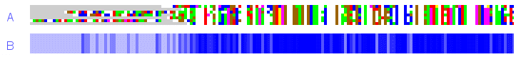

| 
Fig 4.4. An aligned set of sequences coloured (A) according to amino acid physicochemical properties and (B) according to the degree of conservation at each position in the alignment. (A) allows conserved residues and residue groups to be spotted at a glance. (B) highlights the degree of conservation across the entire alignment. Clearly, by bringing similar residues into vertical register, there is an increase in conservation, as denoted by the colour change from pale blue banding at the N-terminus to a virtually continuous dark blue band that continues to the C-terminus. |